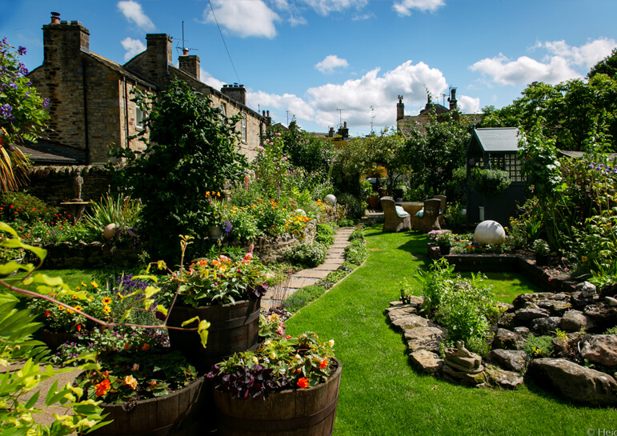
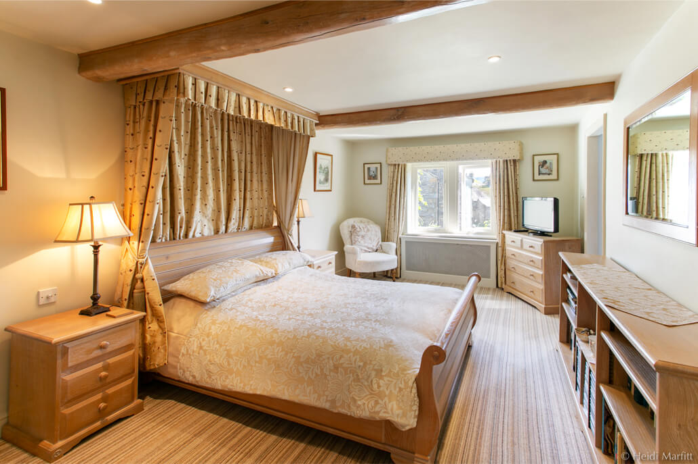
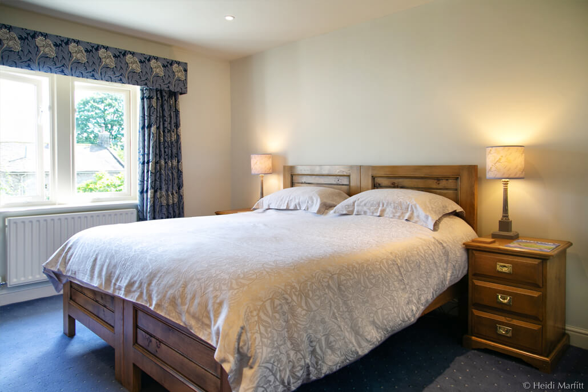
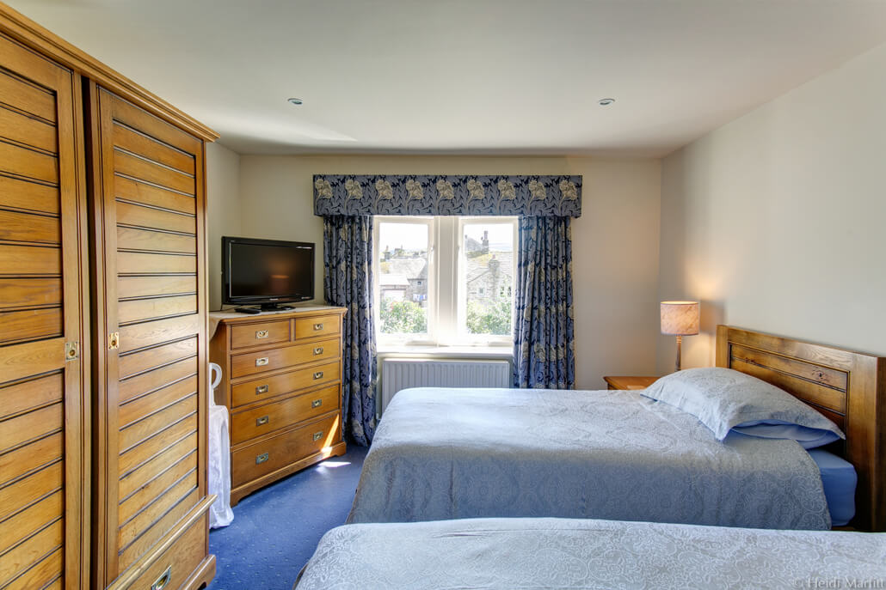
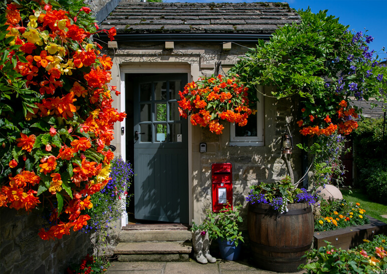
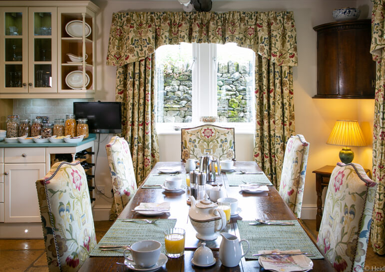
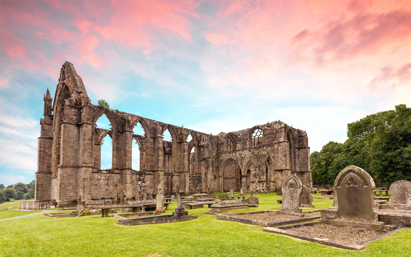

A peaceful bed & breakfast in the heart of Grassington — two luxurious oak-furnished rooms overlooking our cottage garden, in the Yorkshire Dales National Park.
Bed and breakfast accommodation in the heart of Grassington — a perfect peaceful retreat after a day exploring the Dales.

Tucked Away House offers two luxurious bedrooms, both on the first floor overlooking our colourful garden. With views of Barden Fell and the traditional stone cottages of Grassington, it is a perfect peaceful retreat after a busy day exploring the beauty of the Yorkshire Dales National Park.
Both rooms feature exclusive handmade solid oak furniture by local cabinetmakers Royal Oak Furniture, with television, free Wi-Fi, a hairdryer and a comprehensive range of complimentary tea and coffee.
Every piece made locally by Royal Oak Furniture cabinetmakers.
A traditional Yorkshire breakfast is included in every stay.
Grassington is a classic Dales walking village on the Dales Way.
Just two rooms — both first-floor, both en-suite, both overlooking the garden. From £110 per room per night for two people, including full English breakfast.

Kingsize sleigh bed
Oak offers a magnificent kingsize sleigh bed with luxurious bedding and furnishings, and an en-suite with power shower.
From £110 per night · breakfast included

Superking bed · underfloor heating
Elm is a beautifully appointed superking room with an en-suite shower room and luxurious underfloor heating.
From £110 per night · breakfast included

Twin-bedded option
Elm can also be configured as a beautifully appointed twin-bedded room — just let Hilary know when you book.
From £110 per night · breakfast included
The house, the garden and the Dales — all photographed here at Tucked Away House and around Grassington.



A traditional stone village in Wharfedale, inside the Yorkshire Dales National Park.
Grassington is a thriving Dales village of stone cottages, independent shops, cafés and pubs — and a superb base for walking. The Dales Way passes through the village, and Linton Falls and the River Wharfe are a short stroll away.
Fans of All Creatures Great and Small will recognise Grassington as the fictional village of Darrowby in the Channel 5 series. Bolton Abbey, Burnsall, Appletreewick and Skipton are all within easy reach for days out.
Book direct for the best rate — no booking-site commissions, just a friendly welcome.
Tucked Away House
Grassington, Skipton,
North Yorkshire
Phone: 01756 753 332
Email: stay@tuckedawayhouse.co.uk
Please call Hilary for availability and to discuss any special requirements. A 20% deposit is payable on booking; minimum stay of 2 nights on weekends.
Hello! Welcome to Tucked Away House. Ask us anything about your stay — or tap a topic: